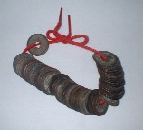
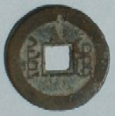
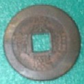
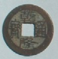
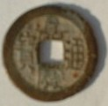
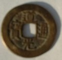
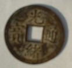

先日、帰宅すると机の上に、なんだか江戸時代の寛永通宝の束のようなものが...

家人に聞くと「先日、３男が友だちの家に遊びに行った。そのとき“ 父が古銭を集めている” と話したら、その家のオジイチャンが“ おみやげに”と云って くれたんだって」
「ふ〜ん、しかしσ(-_-)は古銭なんぞ 集めておらんが...」
どうやらσ(-_-)がギザ十を集めだしたという話が、「古銭をあつめている」という話になってしまったらしい。（まるで伝言ゲームだな...）と思いつつ眺めてみると、寛永通宝ではなく乾隆通宝と刻印してある。おや？っと思ってさらに見ると、道光通宝なんてのもある。なんと、日本ではなく 清朝の銅貨だった。そこでヒモをバラして よく見ると、 ５種類の清朝の銅貨があった。
裏には満州文字が刻印されている。なんと書いてあるのか分からないが、ネット情報によると どうやら「大清（ダーチン）」と書いてあるらしい。

それなりに貴重なものだと思うが なんでウチにくれたのか？ ３男に聞くと、「友達のオジイサンの家は京都で ず〜っと昔から貿易関係の仕事をしていた。家にはこんなのがいっぱいあった」という。ふ〜ん、そうなのか、それにしても気前のいい話。
この５種類の中でもっとも古いのが康熙通宝。康熙辞典で有名な第４代 康熙帝（在位1661-1722）時代の銅貨。

ネット情報によれば、清がまだ金と称し 中国本土に進出する前の銅貨は「○○通宝」ではなくて「天命皇宝」と云う種類だった。「○○通宝」が発行されたのは３代 順治帝の時代からだそうな。※もちろん○○通宝のほかに、何種類も銅銭が発行されている。
４代 康熙帝の次は５代 雍正帝（1722-1735）であるが、この中に雍正通宝は入ってなかった。雍正帝は秘密警察（血滴子）を駆使したことで有名で、この血滴子と麻雀に関係したエピソードが残っている。その雍正通宝が無かったのはチョッピリ残念。
次が６代 乾隆帝（在位1735-1795）時代の乾隆通宝、７代 嘉慶帝（在位1795 - 1820）時代の嘉慶通宝、８代 道光帝（在位1821 - 1850）時代の道光通宝の３枚。※清朝は現在の日本と同じで一元一世制。そこで１人の皇帝の時代には、１つの年号しかない。
  
９代 咸豊帝（在位1850-1861）時代の咸豊通宝、10代 同治帝（在位1861-1874）時代の同治通宝は入ってなかった。最後の１枚が11代 光緒帝（在位1874-1908）時代の光緒通宝。

このあとラストエンペラーで有名な12代 宣統帝(在位1908-1912）＝愛新覚羅 溥儀（あいしんかくら ふぎ）の時代の宣統通宝が存在するが 入ってなかった。現行の骨牌式の麻雀は、おおよそ1865年頃の同治帝の時代、に成立したというのが定説。そうなると、雍正通宝に続いて同治通宝も欲しくなる。こんど 「古銭集めが趣味です」と云って、オジイサンの家に遊びに行こうかな。（^-^；
気になるのが お値段、本日は暖かい桜の季節なのでオドロキのプライスで ご提供。というのはウソだが、ネット情報によれば この時代の銅貨は大量に残っているらしい。そこで古銭価格も１枚数百円、それも小于五（500円以下）というところらしい...
オマケ
昭和40年代まで、満貫を上がると「満州！」と叫ぶオヤジが結構いた。いつの間にか少なくなって、昭和50年頃になるとσ(-_-)の回りではすっかり聞かなくなった。この満州は、もちろん満貫と満州の語呂合わせ。しかし現在の日本麻雀はリーチや縛りなど、満州ルールの影響をかなり受けていると思われる。そういう点から考えると、満貫を満州！と呼称するのも まるっきりアテハズレでもないような（^-^；
※満州という表現について、ウイキpをちょいと検索してみた。
それによれば「２代 ホンタイジ（太宗）の時代に それまでのジュシェン族（女真・女直）という民族名をマンジュ（満洲 Manchu）と改めた。そのためこの地域が西欧で「マンチュリア（Manchuria）」と呼ばれるようになった。これに対応して漢字文化圏でもこの地域を満洲と呼ぶようになった」のだそうな。
「満洲（マンジュ）という呼称の由来は諸説あるが、一般には仏教のマンジュシリ（文殊師利＝文殊菩薩）によるといわれる。しかし近年 ヌルハチ（太祖）の勢力圏がすでに「マンジュ・グルン（満州国）」と呼称されていたことや、史料ではどれも「マンジュ（満州）」と「マンジュシリ」を明確に区別していること等の理由で、この説を否定する説も提出されている」という。ふ〜ん なるほろ、いや、子どものおみやげのお陰で、思いがけなく大いに勉強になった。(^-^)V
|